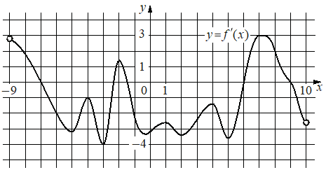

Предварительный разбор основным ассистентом; не официальный ответ и не экспертиза.
На рисунке изображён график производной функции определённой на интервале Найдите количество точек максимума функции принадлежащих отрезку

1
| ID | Действие | Результат | Кандидаты KC | Основания входа |
|---|---|---|---|---|
| s1 | Найти на графике производной переходы с плюса на минус | Слева такой переход при x=-7; ещё один между -2 и -1; справа при x=9. Переходы с - на + не являются максимумами f. | k1 → Считывать знак производной по графику, k2 → Определять локальный экстремум по смене знака производной | condition |
| s2 | Отобрать переходы на [-6;8] | -7 и 9 вне заданного отрезка. Внутри остаётся один переход +→-, между -2 и -1. Ответ 1; вершины самого графика f′ не считаются максимумами f. | k3 → Отбирать точки по заданному промежутку | condition, s1 |